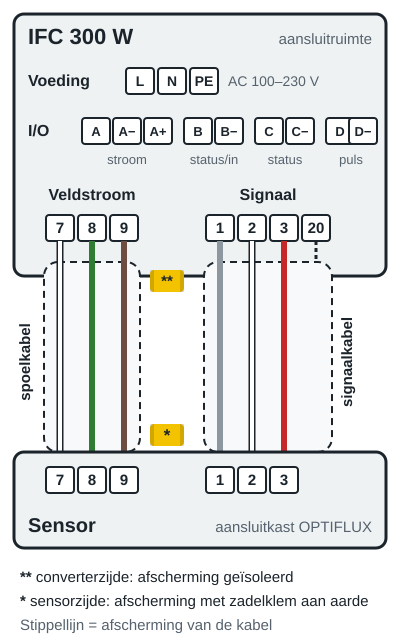
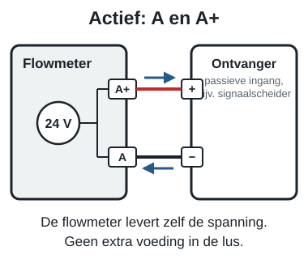
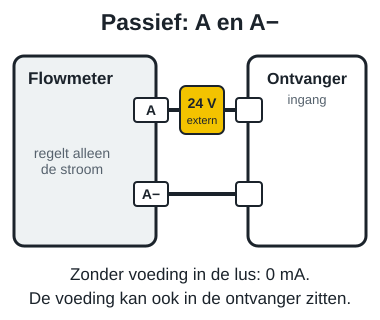

KROHNE IFC 300 W: aansluiten
Elektromagnetische flowmeter. Converter in wandbehuizing, sensor (OPTIFLUX) apart, verbonden met twee kabels.
Overzicht

Kısaca (Türkçe)
IFC 300 W duvara monte converter; sensör ayrı. Aralarında iki kablo var: bobin kablosu (7, 8, 9) ve sinyal kablosu (1, 2, 3 ve ekran 20). Numaralar iki uçta da aynı. Gerçek I/O tipini klemens kapağının içindeki etiketten kontrol et.
Let op
- De converter werkt op 100–230 V AC. Maak spanningsloos voordat je aansluit of herbedraadt.
- Spoel- en signaalkabel nooit verwisselen: de spoelkabel voert de veldstroom, de signaalkabel een heel klein meetsignaal.
- Afscherming volgens het schema aansluiten. Een verkeerde afscherming geeft een onrustige of verkeerde meting.
Voeding
| Uitvoering | Klemmen | Bereik | Verbruik |
|---|---|---|---|
| AC | L, N, PE | 100–230 V (−15 % / +10 %) | 22 VA |
| DC | L+, L−, FE | 12–24 V (−25 % / +30 %) | 12 W |
Spoelkabel en signaalkabel
Spoelkabel (veldstroom)
| Klem | Ader | Genummerde ader |
|---|---|---|
| 7 | wit | 1 |
| 8 | groen | 2 |
| 9 | bruin | 3 |
Afgeschermde 3-aderige kabel. Bij kabels met genummerde aders volg je het nummer, niet de kleur.
Signaalkabel (DS 300)
| Klem | Ader |
|---|---|
| 1 | referentiedraad |
| 2 | wit |
| 3 | rood |
| 20 | afscherming, alleen in de converter |
Klemmen 4, 30 en 40 worden in dit schema niet gebruikt.
Afscherming
| Kant | Wat |
|---|---|
| Sensor | Afscherming met zadelklemmen aan aarde |
| Converter | Buitenste afscherming geïsoleerd; signaalkabel-afscherming op klem 20 |
Kabelnummers
| Kabel | Artikelnummer |
|---|---|
| Spoelkabel, afgeschermd 3-aderig, voor IFC 300 W | 5062100800 |
| Signaalkabel DS 300, grijs | 5316299800 |
| Signaalkabel DS 300, blauw (Ex) | 5316418200 |
| Kabel met genummerde aders, grijs | 5315290300 |
Kısaca (Türkçe)
- Bobin kablosu: 7 beyaz, 8 yeşil, 9 kahverengi. Numaralı tellerde 1-2-3'ü takip et.
- Sinyal kablosu: 1 referans teli, 2 beyaz, 3 kırmızı, 20 ekran (sadece converter'da).
- Ekran: sensör tarafında eyer kelepçeyle toprağa, converter tarafında dış ekran yalıtılır.
I/O-klemmen (basic I/O)
| Klemmen | Functie |
|---|---|
| A + A− | Stroomuitgang 4-20 mA met HART, passief |
| A + A+ | Stroomuitgang 4-20 mA met HART, actief |
| B + B− | Statusuitgang of stuuringang |
| C + C− | Statusuitgang |
| D + D− | Pulsuitgang of statusuitgang |
Actief of passief
Bij basic I/O kies je met de klemmen of de stroomuitgang actief of passief werkt. Kijk eerst wat de ontvanger is:
- Ontvanger zonder eigen lusvoeding, zoals de ingang van een signaalscheider: A + A+ (actief).
- Ontvanger met lusvoeding, of een externe voeding in de lus: A + A− (passief).


Twee bronnen in één lus (actieve uitgang op een actieve ingang) werkt niet. Geen enkele bron (passieve uitgang op een passieve ingang) geeft 0 mA. Zie ook Klantsignaal 4-20 mA: storing zoeken.
Kısaca (Türkçe)
Basic I/O'da aktif/pasif seçimi klemenslerle yapılır: A + A+ aktif (sayaç loop'u kendisi besler), A + A− pasif (loop'ta harici besleme gerekir). Karşı taraf sinyal ayırıcı gibi pasif bir girişse A + A+ kullan. İki taraf da pasifse akım 0 mA olur.
Bronnen
- KROHNE PICK: documentatie en aansluitschema per serienummer
- IFC 300 handboek (PDF)